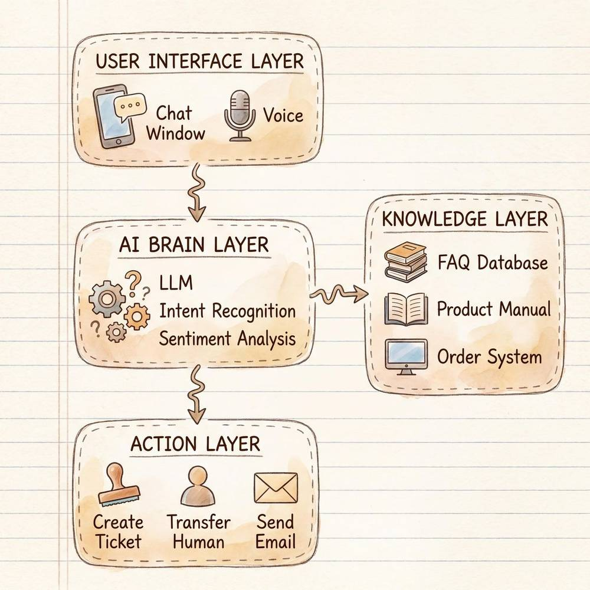
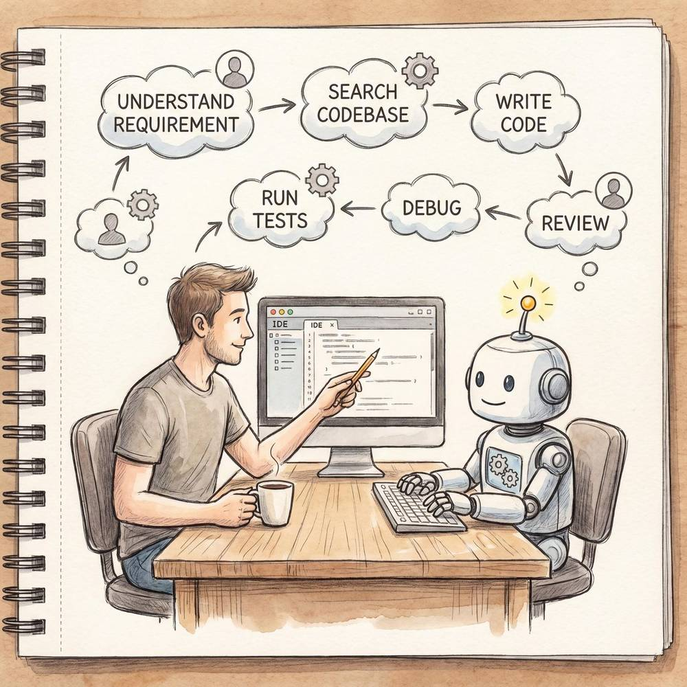
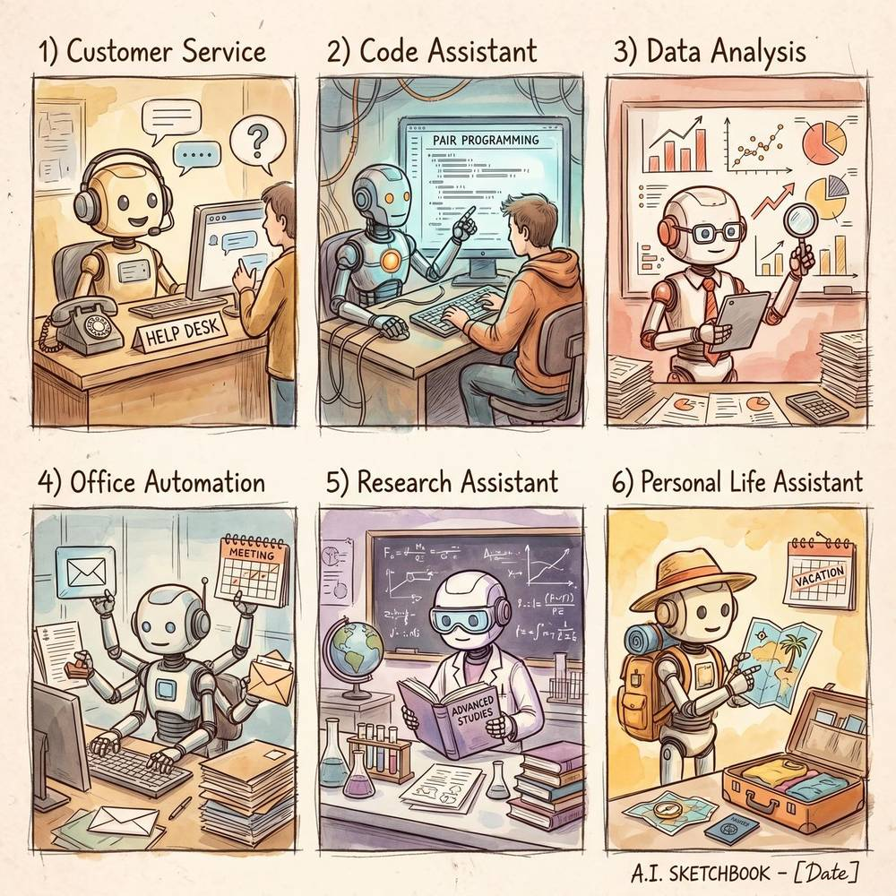

第九章：AI Agent 实战案例
导读：前八章我们从概念、架构、记忆、工具调用、多 Agent 协作等维度建立了完整的理论体系。本章将"落地"——通过六大真实场景的深度剖析，让你看到 Agent 技术在各行各业中如何解决实际问题，以及在构建自己的 Agent 时应该遵循哪些实践建议。每个案例都会从场景分析、架构设计、关键技术、最佳实践四个层面展开。
9.1 智能客服 Agent
9.1.1 场景描述
客服是 AI Agent 最早、也最成熟的落地场景之一。一家中等规模的电商公司，每天可能收到数万条用户咨询，涵盖商品咨询、物流查询、退换货申请、投诉建议等多种类型。传统做法是雇佣大量人工客服坐席，成本高昂且难以保证 7×24 小时服务。智能客服 Agent 的目标就是：用一个能理解自然语言、具备业务知识、能调用后端系统的 Agent 来处理绝大多数常见问题，将复杂或高情绪问题平滑转交人工。
9.1.2 架构设计
一个生产级智能客服 Agent 的典型架构如下：

用户消息输入
│
▼
┌─────────────────────┐
│ 预处理层 │ ← 敏感词过滤、语言检测、会话上下文拼接
└────────┬────────────┘
│
▼
┌─────────────────────┐
│ 意图识别 & 槽位填充 │ ← 多标签分类 + NER，识别用户到底要干什么
└────────┬────────────┘
│
┌────┴─────┬──────────┬──────────┐
▼ ▼ ▼ ▼
FAQ问答 工单操作 订单查询 情绪安抚
(RAG检索) (API调用) (数据库查询) (话术生成)
│ │ │ │
└────┬─────┴──────────┴──────────┘
│
▼
┌─────────────────────┐
│ 置信度 & 满意度评估 │ ← 当置信度低于阈值或用户表达不满时
└────────┬────────────┘
│
┌────┴────┐
▼ ▼
自动回复 转人工坐席核心流程说明：
- 预处理层：对用户输入进行清洗，包括去除特殊字符、检测语言（多语言场景）、拼接最近 N 轮对话作为上下文窗口。
- 意图识别与槽位填充：这是整个系统的"大脑"。基于大语言模型的意图识别可以处理开放式表达，而传统 NLU 模型则在特定垂直领域有更高的精度。实际生产中常采用"LLM 兜底 + 规则引擎优先"的混合策略。
- 多路径处理：
- FAQ 问答：通过 RAG（检索增强生成）从知识库中找到最相关的文档片段，再用 LLM 组织自然语言回复。
- 工单操作：调用 CRM 系统 API 创建退换货工单、修改收货地址等。
- 订单查询：连接订单数据库，实时查询物流状态。
- 情绪安抚：当检测到用户情绪激动（通过情感分析模型判断），优先使用安抚话术，降低对抗性。
- 置信度评估与转人工：Agent 对自己的每次回复给出一个置信度评分。当评分低于设定阈值（如 0.7），或者用户连续表达不满，系统自动将会话转接至人工坐席，并附带完整的对话历史和 Agent 已收集的信息摘要。
9.1.3 生活中的体验举例
淘宝客服机器人：当你在淘宝咨询"我的快递到哪里了"时，机器人会自动识别你最近的订单、调用菜鸟物流 API 查询轨迹，直接返回"您的包裹目前在【杭州转运中心】，预计明天送达"。如果你追问"我要退货"，它会切换到退换货流程，引导你选择退货原因并生成退货单号。只有当你说"我要投诉商家"且情绪较为激动时，才会转接人工。
银行客服机器人：拨打银行热线时，语音 Agent 会先通过声纹识别确认身份，然后理解你的需求——"查余额""转账""挂失"等，直接在电话中完成操作。相比传统的"按 1 查询余额、按 2 转账……"的 IVR 菜单，体验提升巨大。
9.1.4 如何衡量效果
| 指标 | 定义 | 目标值（参考） |
|---|---|---|
| 自动解决率 | Agent 独立解决的会话占比 | ≥ 75% |
| 首次回复时间 | 用户发送消息到 Agent 第一次回复的耗时 | ≤ 2 秒 |
| 用户满意度（CSAT） | 会话结束后用户评分 | ≥ 4.2 / 5 |
| 转人工率 | 需要转接人工的会话占比 | ≤ 20% |
| 意图识别准确率 | 意图分类的正确比例 | ≥ 92% |
| 平均处理时长 | 从会话开始到问题解决的总时长 | 较纯人工降低 50%+ |
9.1.5 关键技术与最佳实践
- 知识库的持续更新：客服知识库必须跟随业务变化实时更新。建议建立"知识库 Owner"机制，每周由业务团队审核并补充新内容。
- 兜底策略：永远不要让用户陷入"死胡同"。当 Agent 无法理解时，提供明确的转人工入口或引导用户换一种表述。
- A/B 测试：对不同的话术模板、RAG 检索策略进行 A/B 测试，用数据驱动优化。
- 多轮对话管理：使用有限状态机（FSM）或基于 LLM 的对话状态跟踪（DST）管理复杂的多轮交互流程。
9.2 代码助手 Agent
9.2.1 代表产品
代码助手 Agent 是近两年发展最迅猛的 Agent 类别，代表产品包括：
- Cursor：基于 VS Code 深度定制的 AI 原生 IDE，将 Agent 能力深度嵌入编辑器，支持多文件编辑、代码库级别的上下文理解。
- Claude Code：Anthropic 推出的命令行 Agent，能直接在终端中理解整个项目结构、执行 shell 命令、编辑多个文件、运行测试，是"命令行里的 AI 工程师"。
- GitHub Copilot Workspace：从 Issue 出发，自动分析需求、制定计划、生成代码、运行验证的端到端工作流。
9.2.2 六大核心功能
- 代码生成：根据自然语言描述生成完整的函数、类、模块，甚至整个项目脚手架。
- 代码理解与解释：阅读并解释复杂代码逻辑，帮助开发者快速理解遗留系统。
- Bug 诊断与修复：分析错误日志和堆栈信息，定位问题根因并提供修复方案。
- 代码重构：识别代码异味（code smell），提出并执行重构建议，提升代码质量。
- 测试生成：根据源代码自动生成单元测试、集成测试，提高覆盖率。
- 文档生成：为函数、API、模块自动生成规范的注释和文档。
9.2.3 完整工作流程
以"修复一个生产 Bug"为例：

1. 开发者描述问题：
"用户反馈提交订单时偶现500错误，日志中有 NullPointerException"
2. Agent 分析阶段：
├── 搜索代码库中的订单提交相关代码
├── 找到 OrderService.submitOrder() 方法
├── 分析调用链：Controller → Service → DAO
└── 定位到 PaymentInfo 对象在特定路径下可能为 null
3. Agent 制定修复方案：
├── 方案A：添加 null 检查 + 默认值
├── 方案B：在上游确保 PaymentInfo 不为 null
└── 推荐方案B（更根本的修复）
4. Agent 执行修复：
├── 编辑 OrderValidator.java，添加校验逻辑
├── 编辑 OrderService.java，添加防御性检查
├── 生成对应的单元测试
└── 运行测试套件，确认全部通过
5. Agent 输出：
├── 修改文件清单和 diff
├── 修复原因说明
└── 建议的 commit message9.2.4 与传统 IDE 的区别
| 维度 | 传统 IDE | AI 代码助手 Agent |
|---|---|---|
| 代码补全 | 基于语法树的局部补全 | 基于语义理解的跨文件、跨模块补全 |
| 错误检测 | 静态分析（lint规则） | 静态分析 + 语义级逻辑错误检测 |
| 搜索能力 | 文本匹配、符号搜索 | 自然语言语义搜索（"找到处理支付的代码"） |
| 重构 | 预定义的重构操作（重命名、提取方法） | 理解意图后的智能重构（"把这段逻辑改成策略模式"） |
| 调试 | 断点、变量监视 | 自动分析日志和堆栈，推理根因 |
| 学习曲线 | 需要记忆快捷键和配置 | 自然语言交互，即问即答 |
| 项目理解 | 依赖开发者自行阅读代码 | 主动分析项目结构并构建上下文 |
9.2.5 实际编码场景举例
场景：为一个 Python Flask 项目添加用户认证功能
开发者只需说："给这个项目添加基于 JWT 的用户认证，包括注册、登录、Token 刷新三个接口，使用 SQLAlchemy 操作数据库。"
Agent 会：
- 扫描现有项目结构，了解已有的路由、模型、配置方式。
- 创建
models/user.py定义 User 模型。 - 创建
routes/auth.py实现三个接口。 - 更新
requirements.txt添加PyJWT、bcrypt依赖。 - 更新
app.py注册新的蓝图。 - 创建
tests/test_auth.py编写测试用例。 - 运行测试确保通过。
整个过程中，Agent 会持续与开发者确认关键决策（如密码加密算法的选择、Token 过期时间的设定），而非完全自主决定。这体现了 "Human-in-the-Loop" 的设计原则。
9.3 数据分析 Agent
9.3.1 应用场景
数据分析 Agent 的目标是让非技术人员也能通过自然语言完成复杂的数据分析任务。传统的数据分析流程需要分析师掌握 SQL、Python/R、可视化工具等技能，门槛较高。数据分析 Agent 将这些技能封装在 Agent 内部，用户只需用自然语言描述需求。
典型应用场景包括：
- 销售团队快速查看业绩数据和趋势
- 运营团队分析用户行为漏斗
- 管理层生成经营报告
- 市场团队评估营销活动 ROI
9.3.2 六步工作流程
用户输入自然语言需求
│
▼
① 需求理解与澄清
├── 解析用户意图（趋势分析？对比分析？预测？）
├── 识别关键实体（时间范围、指标名称、维度）
└── 必要时反问澄清（"Q1是指自然季度还是财年？"）
│
▼
② 数据源定位与接入
├── 查询数据目录，找到相关表/API
├── 确认数据权限
└── 了解数据字典（字段含义、数据类型）
│
▼
③ 查询计划生成
├── 生成 SQL / API 调用计划
├── 考虑性能优化（分区裁剪、索引利用）
└── 处理跨源数据的 Join 策略
│
▼
④ 数据获取与清洗
├── 执行查询获取原始数据
├── 处理缺失值、异常值
└── 数据类型转换和标准化
│
▼
⑤ 分析与可视化
├── 根据分析类型选择统计方法
├── 生成图表（折线图、柱状图、热力图等）
└── 计算关键统计量
│
▼
⑥ 洞察总结与建议
├── 用自然语言总结发现
├── 指出异常和趋势
└── 给出可执行的业务建议9.3.3 具体示例：完整的 Agent 执行过程
用户输入："分析我们公司 Q1 销售数据，看看哪些产品卖得好，哪些区域增长快。"
Agent 执行过程：
步骤一：需求理解
Agent 内部推理："用户需要 Q1（2026年1-3月）的销售数据分析，关注两个维度：产品维度的销售排名、区域维度的增长率。需要的指标包括：销售额、销量、同比/环比增长率。"
步骤二：数据源定位
Agent 查询数据目录，发现相关数据在
dw.fact_sales_order表和dw.dim_product、dw.dim_region维表中。
步骤三：生成查询
-- 产品维度分析
SELECT p.product_name, p.category,
SUM(s.amount) as total_sales,
SUM(s.quantity) as total_quantity,
ROUND(SUM(s.amount) / LAG(SUM(s.amount)) OVER (ORDER BY p.category) - 1, 4) as growth_rate
FROM dw.fact_sales_order s
JOIN dw.dim_product p ON s.product_id = p.product_id
WHERE s.order_date BETWEEN '2026-01-01' AND '2026-03-31'
GROUP BY p.product_name, p.category
ORDER BY total_sales DESC;
-- 区域维度分析（含同比）
SELECT r.region_name,
SUM(CASE WHEN s.order_date BETWEEN '2026-01-01' AND '2026-03-31' THEN s.amount END) as q1_2026,
SUM(CASE WHEN s.order_date BETWEEN '2025-01-01' AND '2025-03-31' THEN s.amount END) as q1_2025,
ROUND((q1_2026 - q1_2025) / q1_2025 * 100, 2) as yoy_growth_pct
FROM dw.fact_sales_order s
JOIN dw.dim_region r ON s.region_id = r.region_id
WHERE s.order_date BETWEEN '2025-01-01' AND '2026-03-31'
GROUP BY r.region_name
ORDER BY yoy_growth_pct DESC;步骤四：数据获取与清洗
Agent 执行 SQL，获取结果集。发现"其他"区域有异常值（单笔金额异常大），标记并排除后重新统计。
步骤五：分析与可视化
Agent 生成：
- Top 10 产品销售额柱状图
- 各区域 Q1 销售额与同比增长率双轴图
- 产品类别占比饼图
步骤六：洞察总结
"Q1 销售总额为 3,280 万元，环比增长 12.5%。关键发现：① 智能家居品类增长最快（+45% YoY），建议加大该品类库存和营销投入；② 华东区域贡献了 35% 的销售额，但增速放缓（+3%），需关注竞品动态；③ 西南区域虽基数小但增长率达 68%，属于高潜力市场。"
9.3.4 工具链
数据分析 Agent 通常集成以下工具：
- 数据查询：SQL 执行引擎（支持 MySQL、PostgreSQL、BigQuery 等）
- 数据处理：Python Pandas 运行时
- 可视化：Matplotlib、Plotly、ECharts
- 统计分析：SciPy、statsmodels
- 报告生成：Markdown / PDF 导出
- 权限管理：数据访问控制，确保 Agent 只能查询用户有权访问的数据
9.4 自动化办公 Agent
9.4.1 五大办公场景
自动化办公 Agent 是将 AI Agent 能力嵌入日常办公工具的实践方向。它不是一个单独的产品，而是一种融入工作流的智能化升级。以下是五大核心场景的详细拆解：
| 场景 | Agent 能力 | 集成工具 | 典型交互示例 |
|---|---|---|---|
| 日程管理 | 智能排程、冲突检测、优先级建议、时区自动转换 | Google Calendar、飞书日历、Outlook | "帮我和张总约下周的会，我们俩都有空的时间，优先上午" |
| 邮件处理 | 邮件分类、优先级排序、自动草拟回复、摘要提取 | Gmail、Outlook、飞书邮箱 | "总结今天未读邮件中需要我回复的，按紧急程度排列" |
| 文档协作 | 自动生成文档、格式化、翻译、内容审校、模板填充 | 飞书文档、Google Docs、Notion | "根据本周产品会议纪要，生成一份面向管理层的周报" |
| 会议管理 | 自动转录、生成纪要、提取待办、跟踪执行 | 飞书会议、Zoom、Teams | "整理今天下午产品评审会的会议纪要，列出每个人的 Action Item" |
| 数据报表 | 定时数据拉取、自动生成图表、异常预警 | 飞书多维表格、Google Sheets、Excel | "每周一早上 9 点自动生成上周运营数据周报并发到群里" |
9.4.2 深入案例：智能会议管理 Agent
让我们以会议管理 Agent 为例，看看它如何端到端地工作：
会前：
- 根据会议主题和参与者，自动准备相关背景材料（上次会议纪要、相关文档链接）。
- 发送会议议程提醒，并收集参与者的议题补充。
会中：
- 实时语音转录，支持多人说话人识别。
- 实时标注关键决策点和待办事项。
- 当讨论偏离议题时，生成温和提醒。
会后：
- 生成结构化的会议纪要（讨论要点、决策、待办）。
- 自动将待办事项同步到项目管理工具（如飞书项目、Jira）。
- 追踪待办完成情况，在截止日期前发送提醒。
9.4.3 办公 Agent 的关键架构特点
- 事件驱动：办公 Agent 通常是被事件触发的——收到邮件、会议即将开始、日报到期。它需要一个事件监听和调度系统。
- 权限敏感：处理的都是企业数据，Agent 必须严格遵守权限模型，不能越权访问。
- 静默执行 + 人工确认：大多数自动化操作应以"草稿"形式呈现，由用户一键确认后执行，而非完全自动执行，避免误操作。
- 多系统集成：需要对接大量 SaaS 工具的 API，OAuth 认证、Webhook 管理、限流处理都是工程挑战。
9.5 科研辅助 Agent
9.5.1 五大核心功能
科研辅助 Agent 正在成为研究人员的"数字科研伙伴"。它的五大核心功能如下：
1. 文献检索与综述
- 跨数据库检索（PubMed、arXiv、Google Scholar、Web of Science）。
- 自动过滤、去重、按相关性排序。
- 生成文献综述摘要，标注研究脉络和知识空白。
2. 实验设计辅助
- 根据研究假设建议实验方案。
- 推荐对照组设置、样本量计算。
- 识别潜在的混杂变量，提出控制策略。
3. 数据分析与统计
- 自动选择合适的统计方法（t检验、ANOVA、回归分析等）。
- 生成统计结果的标准化报告。
- 检查统计假设是否满足（正态性、方差齐性等）。
4. 论文写作辅助
- 根据实验结果和文献综述辅助撰写各章节。
- 格式化引用和参考文献（APA、IEEE、Vancouver 等格式）。
- 语言润色和学术表达优化。
5. 同行评审模拟
- 以审稿人视角审阅论文，提出改进建议。
- 检查逻辑漏洞、数据一致性问题。
- 模拟"审稿意见"，帮助作者提前改进。
9.5.2 完整案例：用 Agent 辅助撰写综述论文
假设一位研究生需要撰写一篇关于"大语言模型在医疗诊断中的应用"的综述论文：
第一步：文献检索 Agent
用户："帮我检索近三年关于 LLM 在医疗诊断领域应用的论文，重点关注影像诊断和电子病历分析两个方向。"
Agent 执行：
- 在 PubMed 检索：
("large language model" OR "LLM" OR "GPT") AND ("medical diagnosis" OR "clinical diagnosis") AND ("medical imaging" OR "electronic health record")，时间限制 2023-2026。 - 在 arXiv 检索 cs.AI 和 cs.CL 分类下的相关论文。
- 去重后得到 247 篇论文，按被引次数和相关性排序，精选 Top 50 篇。
- 生成每篇论文的 3 句话摘要和关键贡献标注。
第二步：文献分析 Agent
Agent 对 50 篇论文进行分析，输出：
- 研究脉络图：2023 年以规则增强为主 → 2024 年开始端到端 LLM 诊断 → 2025-2026 年多模态融合成为主流。
- 技术路线分类：Prompt Engineering 路线（18篇）、Fine-tuning 路线（15篇）、RAG 路线（12篇）、Agent 路线（5篇）。
- 知识空白：缺乏大规模临床验证、可解释性不足、数据隐私问题未充分解决。
第三步：论文框架 Agent
根据文献分析结果，Agent 建议论文结构：
1. 引言：背景、动机、本文贡献
2. 背景知识：LLM 基础、医疗诊断概述
3. LLM 在影像诊断中的应用
3.1 放射影像报告生成
3.2 病理图像分析
3.3 多模态融合诊断
4. LLM 在电子病历分析中的应用
4.1 临床命名实体识别
4.2 诊断推理与决策支持
4.3 患者风险预测
5. 关键挑战与未来方向
6. 结论第四步：写作辅助 Agent
用户逐章撰写，Agent 辅助：
- 提供每个小节需要引用的核心文献。
- 对用户写好的段落进行学术语言润色。
- 检查引用格式的一致性。
- 确保论述的逻辑连贯性。
第五步：模拟评审 Agent
论文初稿完成后，Agent 以三位"虚拟审稿人"的身份进行评审：
- 审稿人 A（方法论视角）："第 3.3 节对多模态融合方法的分类不够清晰，建议参考 [XXX] 的分类框架重新组织。"
- 审稿人 B（临床视角）："论文缺乏对 LLM 诊断在实际临床场景中的讨论，FDA 审批流程和临床试验设计应纳入讨论范围。"
- 审稿人 C（技术细节）："表 2 中的模型性能对比缺少置信区间和统计显著性检验。"
这种模拟评审能帮助研究者在正式投稿前大幅提升论文质量。
9.6 个人生活助理 Agent
9.6.1 旅行规划 Agent
旅行规划可能是个人场景中最能体现 Agent 复杂推理与工具使用能力的案例。
场景：用户说"我和女朋友想五一去日本玩五天，预算人均一万，想体验文化和美食"。
Agent 工作流程：
- 需求分析：2 人出行，5 天 4 晚，人均预算 10000 元，偏好文化和美食体验，时间为五一黄金周。
- 机票搜索：调用机票比价工具（如 Skyscanner API），搜索出发地到东京/大阪的往返机票，比较价格和时间。考虑到黄金周期间机票较贵，建议选择 4 月 30 日出发、5 月 5 日返回，可节省约 20%。
- 住宿推荐：调用酒店比价工具，推荐位于交通便利区域（如东京新宿、大阪难波）的酒店。结合预算分配（住宿约占 30%），推荐性价比高的选项。
- 行程规划：
- Day 1：东京浅草寺 → 仲见世通 → 隅田川游船 → 银座晚餐
- Day 2：明治神宫 → 表参道 → 涩谷 → 新宿歌舞伎町
- Day 3：新干线前往京都 → 伏见稻荷大社 → 清水寺 → 祇园
- Day 4：京都嵯峨野竹林 → 金阁寺 → 前往大阪 → 道顿堀美食
- Day 5：大阪城 → 黑门市场 → 返程
- 预算明细表：生成详细的预算分配表（交通、住宿、餐饮、门票、购物），确保在预算范围内。
- 实用信息：签证材料清单、Wi-Fi 租赁建议、必备 App（Google Maps、Suica 交通卡等）。
关键的是，Agent 不是简单地罗列信息，而是根据约束条件（预算、偏好、时间）进行个性化优化，并在规划过程中做出权衡取舍——这正是 Agent 区别于传统搜索引擎的地方。
9.6.2 健康管理 Agent
健康管理 Agent 的愿景是成为用户的"数字健康顾问"：
- 数据聚合：连接智能手表（Apple Watch、华为手环）、体脂秤、血压计等设备，汇聚健康数据。
- 趋势分析："你最近两周的静息心率从 62 上升到 71，睡眠质量也在下降，可能与近期工作压力有关。"
- 个性化建议：基于用户的健康数据、饮食记录、运动习惯，给出可执行的建议。"建议本周增加 2 次有氧运动，每次 30 分钟以上；晚餐减少碳水摄入。"
- 异常预警：当数据出现显著异常时主动提醒。"你今天的血压读数 155/95 偏高，建议休息并持续监测。如果持续偏高，建议就医。"
- 就医辅助：当需要就医时，帮助整理最近的健康数据趋势、症状描述，生成一份给医生的"就诊摘要"。
需要特别注意的是：健康管理 Agent 必须非常谨慎，明确自己不是医生，不能做诊断，只能提供参考性建议，并在必要时强烈建议用户就医。这是伦理和法律的红线。
9.6.3 个人理财助手 Agent
- 收支分析：连接银行账户和支付平台，自动分类收支，生成月度财务报告。"你本月餐饮支出比上月增加了 35%，主要因为有 8 笔外卖订单超过 100 元。"
- 预算管理：根据用户设定的预算目标进行跟踪和预警。"按当前消费速度，你的'娱乐'类预算将在本月 22 号提前用完。"
- 投资观察：追踪用户关注的投资标的（股票、基金、加密货币），提供行情摘要和新闻聚合。注意：Agent 只提供信息聚合，不应给出投资建议，因为涉及金融监管合规问题。
- 税务提醒：在报税季自动整理年度收入和扣除项信息，提醒可能遗漏的抵扣项。
9.7 构建 Agent 的实践建议
9.7.1 从 0 到 1 的步骤建议
第一步：明确问题边界
在动手写代码之前，花足够的时间回答以下问题：
- Agent 要解决的核心问题是什么？（一句话描述）
- 目标用户是谁？他们现在怎么解决这个问题？
- Agent 的"成功"长什么样？用什么指标衡量？
- 有哪些事情 Agent 不应该做？（负面清单同样重要）
第二步：设计最小可行 Agent（MVA）
不要一开始就追求"全能 Agent"。选择一个高频、高价值、低风险的子场景，构建最小可行版本：
- 选择 1-2 个核心工具就好。
- 用最简单的 Prompt 策略（甚至不需要复杂的 ReAct 框架）。
- 用硬编码的规则处理边界情况。
- 目标是快速验证"Agent 是否比现有方案更好"。
第三步：构建评测体系
在迭代优化之前，必须先建立评测体系：
- 收集 100+ 真实用户查询作为测试集。
- 定义每个查询的"理想输出"（Ground Truth）。
- 建立自动化评测流水线（可用 LLM-as-Judge 辅助评估）。
- 跟踪核心指标的变化趋势。
第四步：迭代优化
基于评测数据，有针对性地优化：
- Prompt 优化：调整系统提示词、Few-shot 示例。
- 工具优化：改进工具的描述、参数设计、错误处理。
- 检索优化：改进 RAG 的分块策略、嵌入模型、重排序。
- 架构优化：引入规划能力、记忆机制、多 Agent 协作。
第五步：上线与监控
- 先以"辅助模式"上线（Agent 的输出需要人工审核后才发送给用户）。
- 建立完善的日志和监控体系，记录每次 Agent 的推理过程。
- 设置告警阈值（如连续 N 次低置信度回复时通知开发者）。
- 定期回顾 Bad Case，持续改进。
9.7.2 常见坑点
坑点 1：过度依赖 LLM 的"聪明"
很多开发者认为只要用一个强大的 LLM，再加上几个工具，Agent 就能无所不能。现实是：LLM 会幻觉、会犯逻辑错误、会忽略指令。对于高风险操作（如数据库写操作、发送邮件、金融交易），必须有确认机制和回滚方案。
经验法则：Agent 的可靠性 = LLM 能力 × 工程化护栏。两者缺一不可。
坑点 2：上下文窗口的"虚假安全感"
即使模型支持 128K 甚至更长的上下文窗口，也不意味着你应该把所有信息都塞进去。长上下文会导致：
- 延迟增加、成本上升。
- "Lost in the Middle"问题——模型对中间位置的信息关注度下降。
- 关键信息被无关内容稀释。
正确做法是：精准检索，只送入与当前任务最相关的信息。
坑点 3：忽视工具设计的重要性
很多团队花大量时间调优 Prompt，却忽视了工具的设计质量。一个好的工具应该：
- 描述清晰：让 LLM 准确理解什么时候该用它、怎么用。
- 参数简洁：避免过多的可选参数，减少 LLM 的决策负担。
- 错误信息友好：返回人类可读的错误信息，而非堆栈跟踪。
- 幂等安全：同一操作执行两次不会造成副作用（因为 LLM 可能会重试）。
坑点 4：缺乏优雅降级策略
Agent 一定会遇到处理不了的情况。问题是，当它"不行"的时候，用户体验是否仍然可接受？
- 不要：卡死、返回"发生错误"、无限循环重试。
- 应该：识别自身局限，清晰告知用户"这个问题我无法处理，原因是……，建议您……"。
- 对于客服场景：平滑转人工。
- 对于代码场景：保存当前进度并报告遇到的问题。
坑点 5：测试不充分就上线
Agent 的行为空间远大于传统软件（因为 LLM 的输出是非确定性的）。仅靠几个手动测试远远不够。建议：
- 构建覆盖常见场景和边界情况的评测集（至少 200+ 条）。
- 使用对抗性测试（Adversarial Testing）发现 Agent 的脆弱点。
- 进行压力测试，验证高并发下的表现。
- 灰度发布，先让 5% 的流量走 Agent，观察一周再逐步放开。
坑点 6：忽视成本控制
LLM API 调用是按 Token 计费的。一个设计不当的 Agent 可能在一次用户交互中调用 LLM 10+ 次，每次传入大量上下文，成本迅速失控。
控制策略：
- 设置每次会话的最大 LLM 调用次数。
- 对简单任务使用轻量模型（如 Claude Haiku），复杂任务使用强模型（如 Claude Sonnet）。
- 缓存常见查询的结果，避免重复计算。
- 监控每个用户、每个场景的平均成本，设置预算告警。

本章小结
通过六个实战案例的深度剖析，我们看到 AI Agent 正在从实验室走向真实的业务场景。无论是面向企业的智能客服、代码助手、数据分析、办公自动化，还是面向科研人员的研究辅助，甚至面向个人生活的各类助手，Agent 的核心价值都是一致的：理解自然语言意图 → 规划执行步骤 → 调用工具完成任务 → 以人类可理解的方式交付结果。
但同时我们也看到，构建一个可靠、好用、可持续运行的 Agent，远不止"调用一个 LLM API"那么简单。它需要精心的架构设计、完善的工程化护栏、持续的评测与优化，以及对用户体验的敬畏。
下一章预告：第十章将聚焦"AI Agent 的安全与伦理"，讨论 Agent 在获得越来越多自主权的同时，我们如何确保它的行为是安全、可控、合乎伦理的。
本章为"AI Agent 全面学习指南"系列第九章，全文约 5800 字。
💡 觉得有帮助？欢迎关注我们
获取更多 AI Agent 学习资料与行业动态
 微信公众号
微信公众号
 小红书
小红书